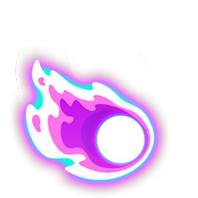
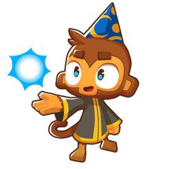
Description: Magic shots seek out the Bloons, even behind cover.
Effect: All magical bolts can ignore Line of Sight and can seek at bloons. Most other attacks also ignore Line of Sight and gain further projectile lifespan. Phoenixes with Guided Magic can lightly home.
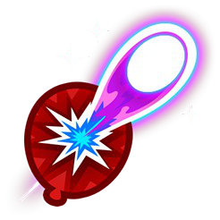
Description: Bigger more powerful magic blasts pop through 2 layers of Bloon.
Effect: Main bolt's projectile size increased and now deals 2 damage. Fireballs with this crosspath deal +1 damage.
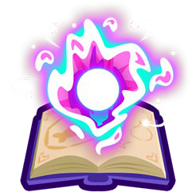
Description: Faster attacks with increased range, damage, and popping power.
Effect: Gains +20 range, 2x attack speed, deals 3 damage per bolt instead of 2, and pops +4 bloons.
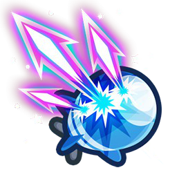
Description: Faster firing magic does huge damage to most Bloon types.
Effect: Deals 6 damage per shot and 16 versus MOAB-class. Attacks 4x faster than an unupgraded Wizard and can pop Lead Bloons.
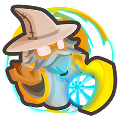
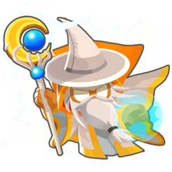
Description: A true master of magical wizardry. Attack faster and does more damage to MOAB-Class Bloons.
Effect: Even higher damage bolts deal 8 damage and 27 MOAB-class damage and attack twice as fast as Arcane Spike. Additionally gains Dragon's Breath and Shimmer attacks, and all additional attacks gain twice as fast speed and deal four times damage to MOAB-Class Bloons (including crosspathing path 2 Fireball and Wall of Fire).
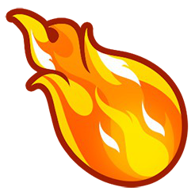
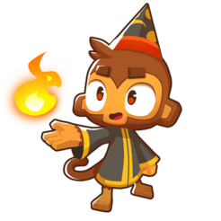
Description: Every few seconds casts an explosive fireball spell.
Effect: Every 2.2s, produces a fireball that explodes on impact. Fireballs cannot explode if collided onto Purple Bloons, and fireball explosions cannot damage Black properties.
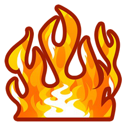
Description: Creates a super hot wall of fire across the track to roast the Bloons as they pass.
Effect: Creates a blaze of fire onto the closest region of bloon track. The blaze will regularly damage bloons as they pass through. Crosspathing with Guided Magic allows Wall of Fire placement to be manually adjusted, and also lasting 6.5s instead of 4.5s.
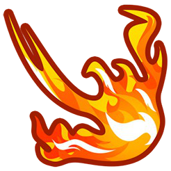
Description: Spews endless flames at nearby Bloons and enhances Fireball and Wall of Fire.
Effect: Rapidly spews flames at bloons. Flames deal 2 damage and sets affected bloons on fire for more damage. Hurls a triple fireball spell, each fireball dealing 3 damage and 14 blast radius. Wall of Fire spawns every 4.5s and gains +10 pierce, and increases tick rate of Wall of Fire.
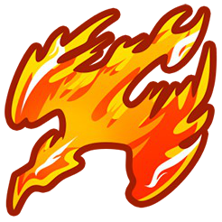
Description: Summon Phoenix ability: Powerful phoenix wreaks Bloon havoc for 20 seconds.
Effect: Ability generates a phoenix that rapidly spews flames which deal 5 damage each. Phoenix has infinite range, ignores line of sight, last up to 20 seconds, and has a 45 second cooldown. Phoenix flames lightly home with 1-4-0 crosspath. Main wizard gains a double flame attack that burns more damage.
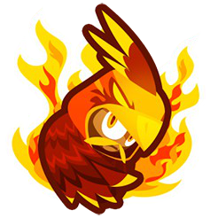
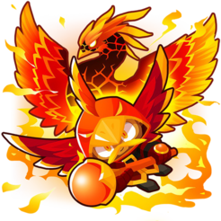
Description: Wizard Lord becomes a master of the flame, turning into a super powerful Lava Phoenix for a short time.
Effect: Enhances damage of all fire-related attacks, Dragon's Breath attack gains 46 pierce and damage increased from 2 to 6. Wall of Fire damage increased from 1 to 5 and fireball damage is tripled. Phoenix is now permanent. Ability now transforms the monkey into a super-phoenix that spews even stronger flames and regular volleys of powerful meteors.
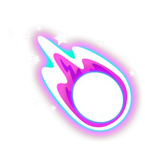
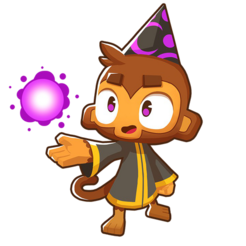
Description: More powerful magic shots move faster and can pop more Bloons.
Effect: Bolt gains +5 pierce and moves faster. Most fire-based attacks gain a certain amount of bonus pierce.
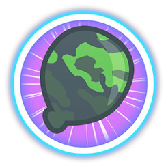
Description: Increase range slightly and allows the Wizard to hit Camo Bloons.
Effect: Wizard gains +10 range, camo detection and can access Camo Priorization.
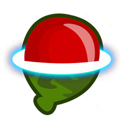
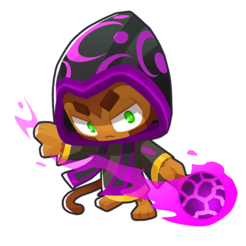
Description: Gains a dark magic attack that periodically reveals location of all nearby Camo bloons permanently.
Effect: Gains a shimmer attack. If bloons get within range, the Wizard periodically produces dark waves of magic that permanently remove camo properties off bloons. Also gains +10 range.
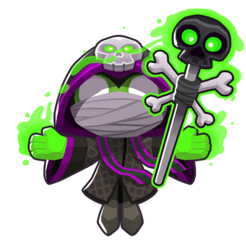
Description: Reanimate recently popped enemies as servants to destroy the Bloons.
Effect: Stores Undead Bloons into its personal graveyard every time any tower pops bloons within its range, and spawns them out to attack bloons. Undead Bloons pop any bloon type. Undead Bloons gain further pierce, damage, and attack speed as the graveyard count grows. All the Wizard's other attacks also gain up to +2 damage as the graveyard grows.
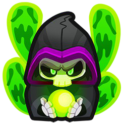
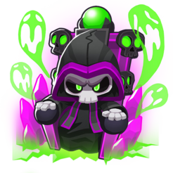
Description: Reanimate even more powerful Bloon servants to obliterate the enemy and enhances all other Necromancers.
Effect: Expands its personal graveyard greatly, Undead Bloons last longer, and can now also summon Undead MOABs and Undead BFBs that deal even more damage and pop more bloons. Improves damage and lifespan of all Undead Bloons on screen including its own. The Wizard's other attacks can now gain up to +10 damage with a full graveyard. Also gains a massive range of 80.